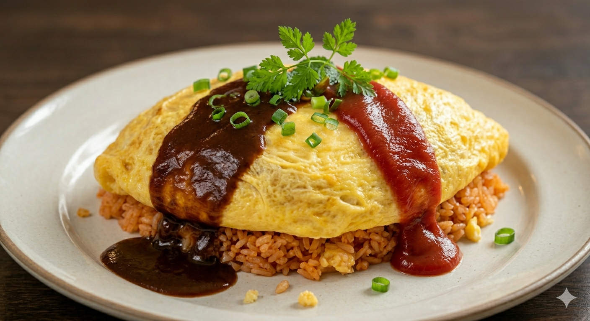
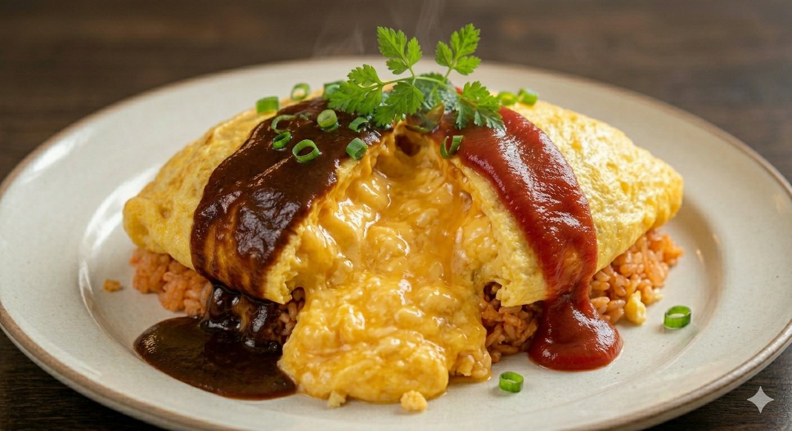
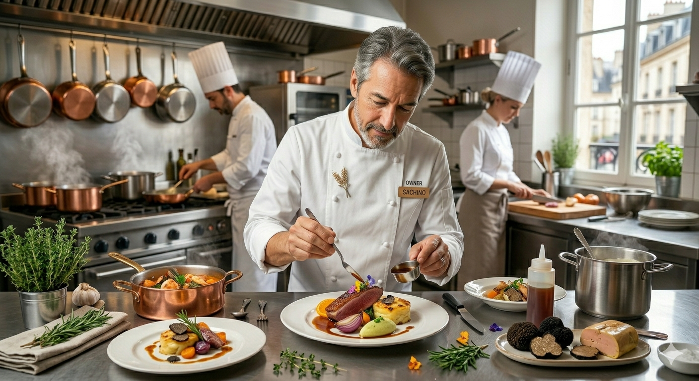

自家農園の無農薬野菜と、半泣鶏卵の新鮮たまご。
名物「ロック風オムライス」が運ぶ、至福のひととき。
※年中無休・駐車場24台完備
SCROLL
ソースのベースから、スイーツに添えるホイップクリーム一滴まで。既製品を一切使わない店主のこだわりが、唯一無二の深い味わいを生み出します。
グランロックファームで大切に育てた旬の野菜を使用。無農薬だからこそ味わえる野菜本来の「甘み」と「力強さ」をプレートに凝縮しました。
昼は木漏れ日が差し込む開放的なカフェ、夜はキャンドルが灯る幻想的なレストラン。忙しい日常を忘れさせる「癒しの時間」を提供します。

地元・山形の「半泣鶏卵」の卵を贅沢に使用したオムライスは、スプーンを入れた瞬間に広がるトロトロの食感が自慢。自家製トマトソースとのハーモニーを、ぜひ堪能ください。
📺 地元山形メディアでも多数紹介！

創業者：有路 貴美
「お腹いっぱいになって、心も体も元気になってほしい。」そんな想いから、1994年にグランロックを創業しました。地産地消にこだわり、30年以上変わらぬ味を守り継いでいます。
自家農園「グランロックファーム」や30年培った手作りの技術を生かして、お客様の笑顔がもっと増えるサービスを準備中です。
自家農園で育った旬の無農薬野菜を自分の手で収穫！採れたて野菜を使った特別ランチや食育ワークショップの開催を予定しています。
「安心・安全な手作りの美味しさを子どもたちにも」。見た目も楽しく身体にも優しい、グランロック特製キッズメニューを試作中です。
〒990-0811
山形県山形市芳野27
※山形駅から車で約10分
敷地内に24台の大型駐車場を完備しております。お車でも安心してお越しください。